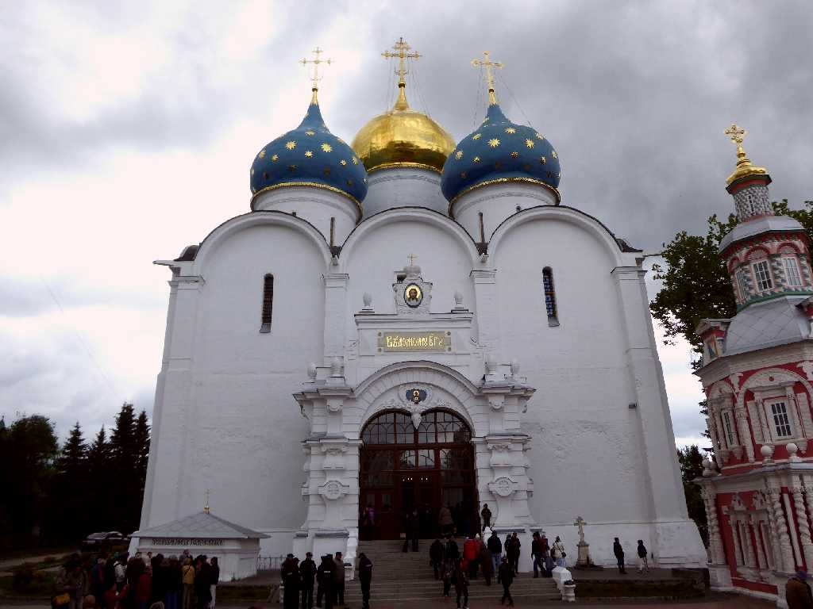
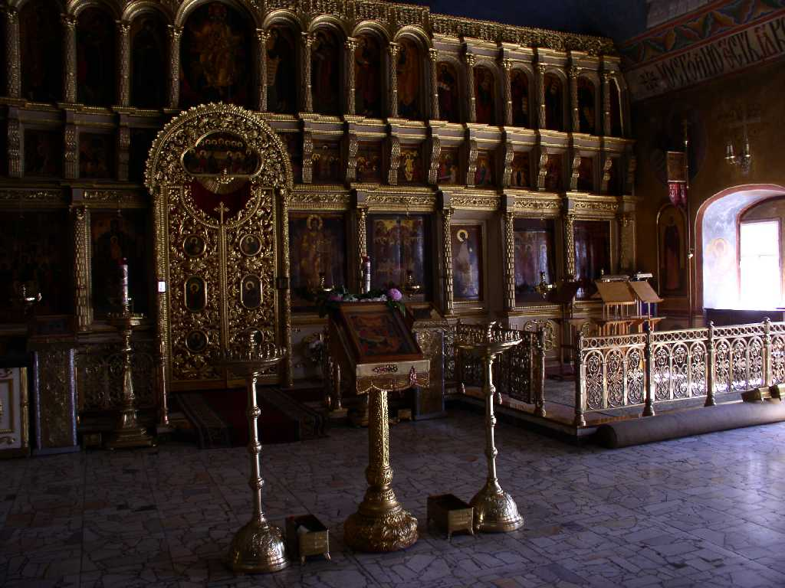
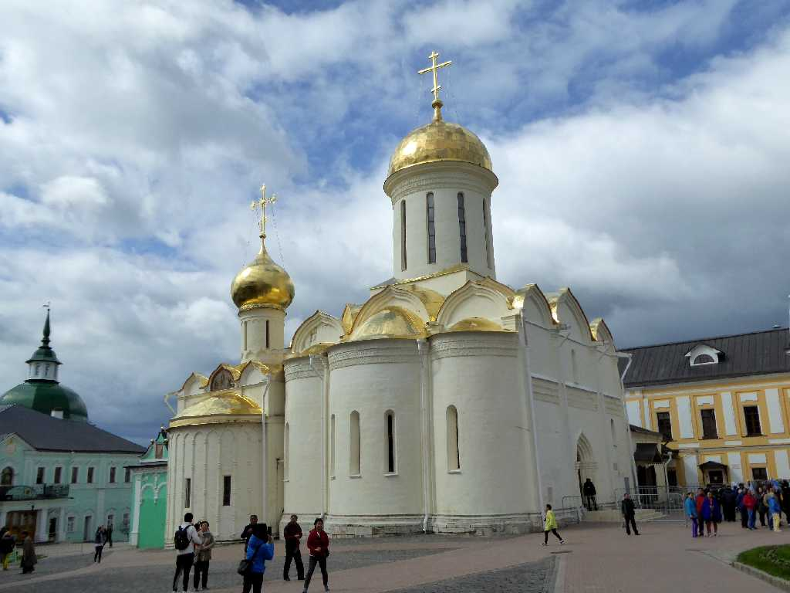
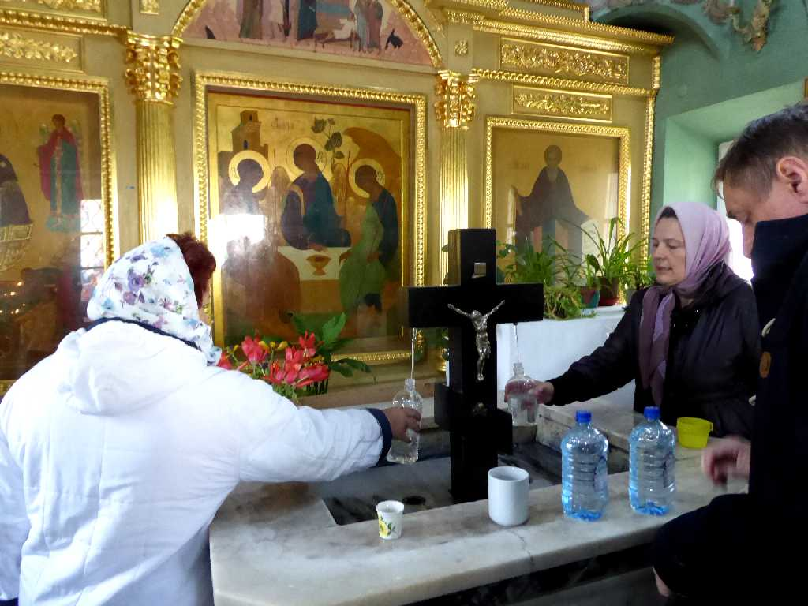
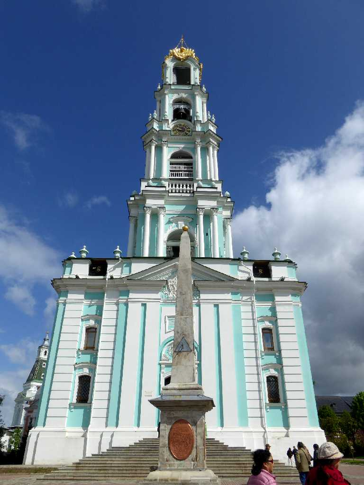
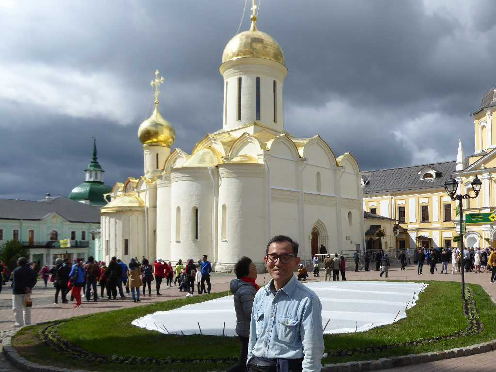
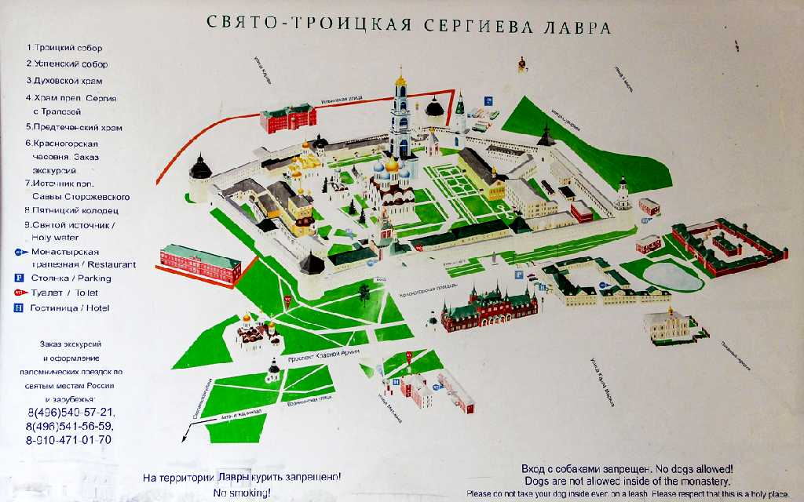
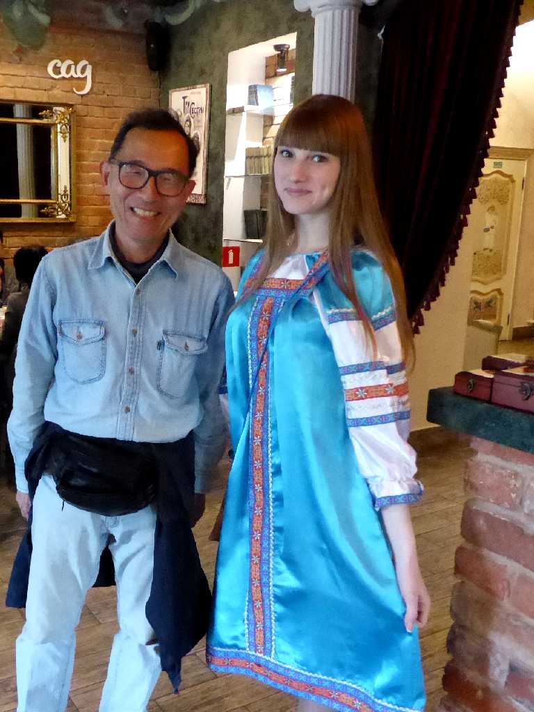

Uspensky Cathedral Troitse-Sergiyeva Lavra Sergiev Posad
１３４５年に創られた至聖三者聖セルギエフ大修道院の生神女就寝大聖堂(ウスペンスキー大聖堂)

Altar Uspensky Cathedral Troitse-Sergiyeva Lavra
至聖三者は三位一体のことでLavraは格式の高い修道院を意味する

Trinity Cathedral Troitse-Sergiyeva Lavra
１４２３年に創られた至聖三者大聖堂にお参りするための大行列ができている(右)

Altar Trinity Cathedral Troitse-Sergiyeva Lavra
Troitse in The State Tretyakov Gallery
１４２０年前後に描かれたロシア美術の到着点と云われる至聖三者のイコンはモスクワのトレチャコフ美術館で観ることができた

Bell Tower Troitse-Sergiyeva Lavra
１７７０年に創られた高さ８８ｍの鐘楼

June 4 2017 Trinity Cathedral Troitse-Sergiyeva Lavra

Troitse-Sergiyeva Lavra

June 4 2017 Sergiev Posad